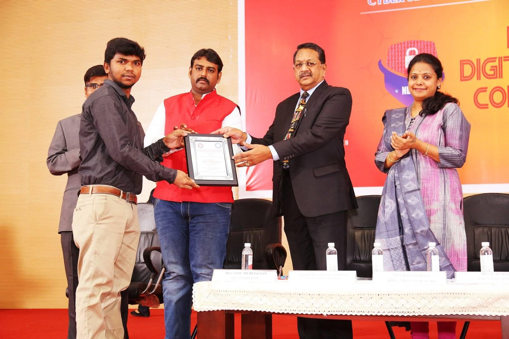
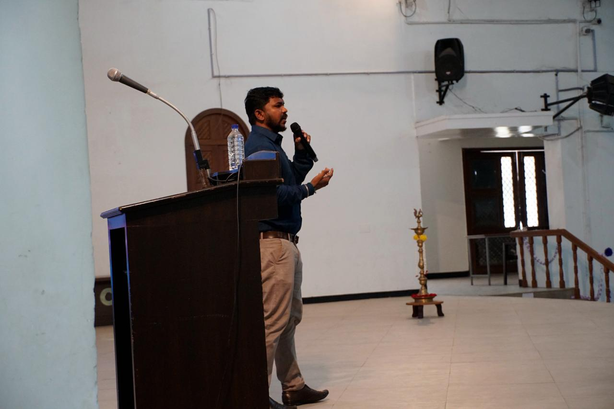
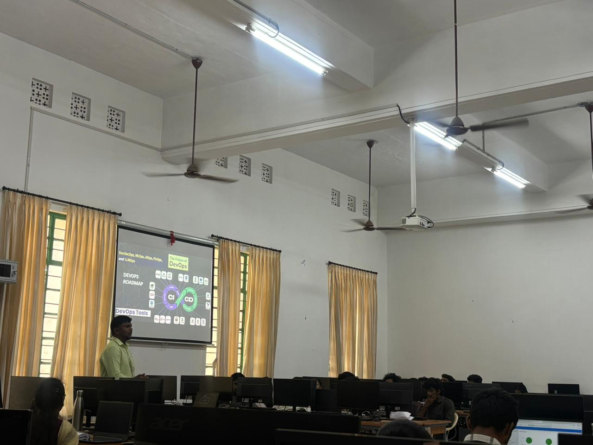
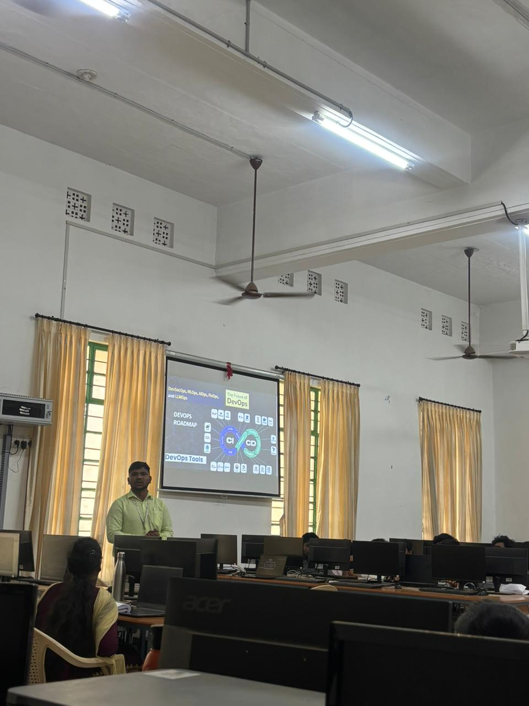
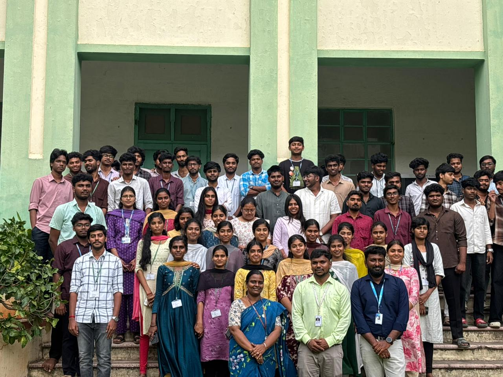
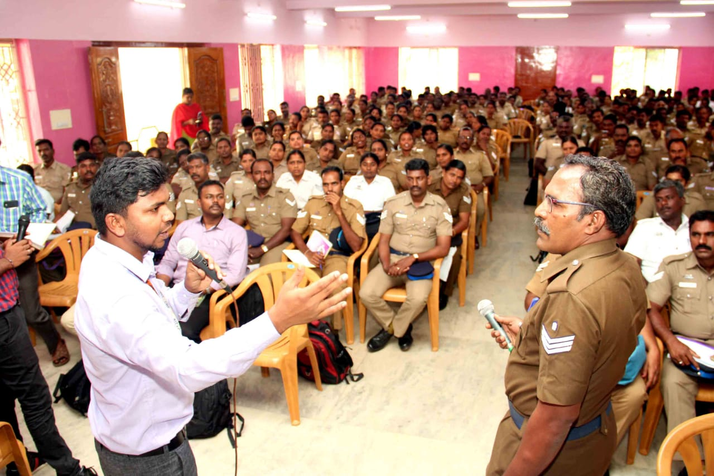
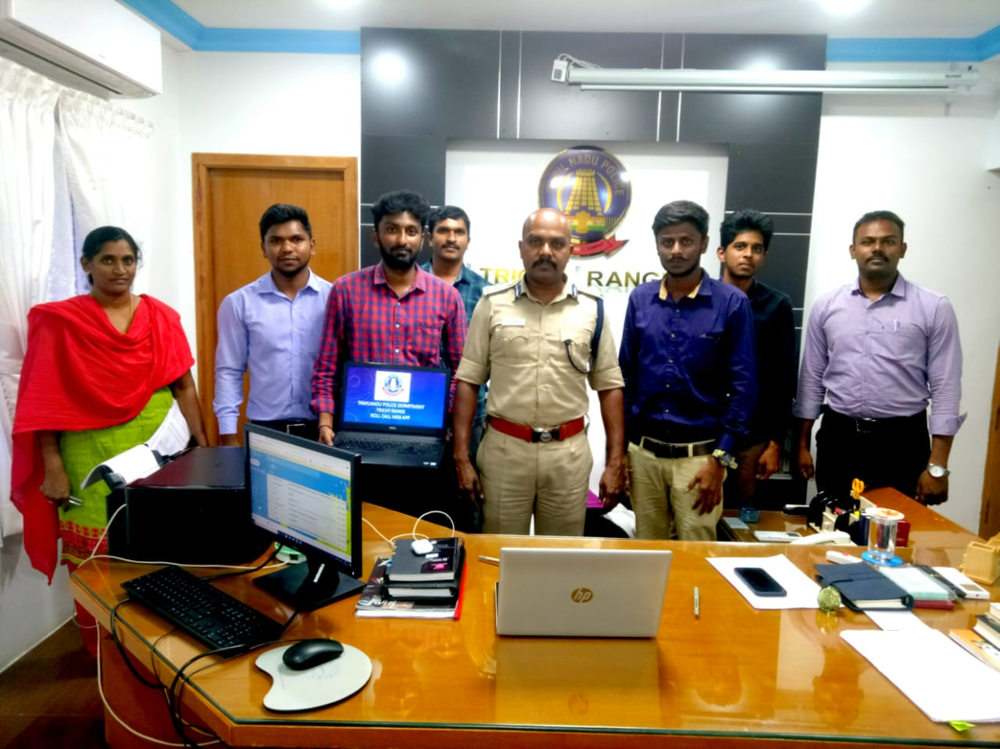
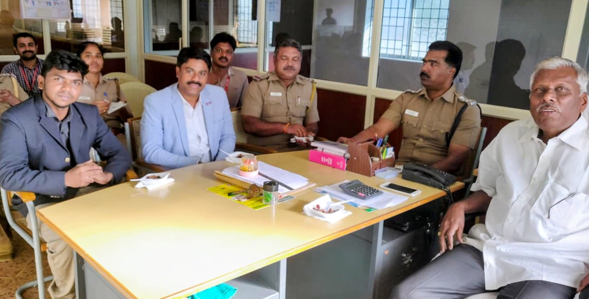

☁
Azure Cloud
Virtual Machines, VNets, NSGs, App Services, cloud infrastructure and hybrid environments.
I’m Thangavelu Palaniyappan, a cloud infrastructure and cybersecurity professional with 10 years of experience across Microsoft Azure, enterprise networking, identity, DevOps practices, Kubernetes and security operations.
$ whoami
thangavelu@senior-cloud-engineer
$ cat focus.txt
Azure Infrastructure
Cloud Security
Kubernetes & DevOps
Entra ID & Microsoft 365
Enterprise Networking
$ uptime
10 years in infrastructure & cybersecurity
My background spans cloud engineering, enterprise infrastructure, cybersecurity and network operations. I work across Azure compute, virtual networking, identity, Microsoft 365, firewalls, Linux/Windows environments and cloud-native deployment practices.
That combination allows me to approach cloud infrastructure end-to-end — from architecture and access control to network security, operational troubleshooting, automation and resilient production support.
Virtual Machines, VNets, NSGs, App Services, cloud infrastructure and hybrid environments.
CI/CD, Azure DevOps, Git, Docker, Kubernetes, automation and Infrastructure as Code concepts.
Microsoft Entra ID, Microsoft 365, MFA, access controls, hardening and vulnerability management.
VLANs, routing, switching, TCP/IP, Fortinet, SonicWall and secure enterprise network operations.
Linux, Windows Server, virtualization, monitoring, logging and production infrastructure support.
PowerShell, Bash and Python for infrastructure administration and operational automation.
Design and administer Microsoft Azure infrastructure, enterprise networking, Microsoft Entra ID, Microsoft 365, Fortinet/SonicWall security controls and hybrid infrastructure. Support CI/CD, monitoring, troubleshooting and cloud-native technology adoption.
Worked across enterprise cybersecurity and hybrid infrastructure, including firewall rule automation, server hardening, secure configuration reviews and remediation of infrastructure security risks.
Performed vulnerability assessments and penetration testing using Nessus, supported secure hosting environments and delivered cybersecurity training and awareness programs.
Selected areas of hands-on cloud and infrastructure work. Each case study focuses on the engineering problem, platform, security considerations and operational outcome.
Built and administered Azure resources for cloud workloads and business applications, working across compute, resource organization, networking and application services.
Azure Virtual Machines
Resource Groups
App Services
Azure Functions
Provisioning · Administration
Network & security controls
Operational troubleshooting
Scalability
Security
Reliability
Cloud operations
Administered Microsoft 365 and identity services with a focus on user administration, security configuration, access management and operational support.
Microsoft Entra ID
Microsoft 365
Identity services
User lifecycle administration
Security configuration
Identity & access management
Secure authentication
Access control
Operational continuity
Supported end-to-end infrastructure operations spanning network and server environments, cloud operations, monitoring, backup, patch management, preventive maintenance and business continuity.
Servers · Network
Cloud · Virtualization
Monitoring
Backup & recovery
Patch management
Preventive maintenance
Operational visibility
Infrastructure resilience
Reliable service support
Delivered technical enablement and knowledge-sharing sessions across cybersecurity, AI, cloud and emerging IT technologies, connecting practical concepts with real-world infrastructure.
Cybersecurity
AI · Cloud
Emerging IT
30,000+ students
and professionals
across India
Technical Trainer
Speaker
Mentor
This portfolio intentionally distinguishes documented experience from illustrative architecture. The architecture diagram above is a reference model; the case studies describe areas supported by the available career information.
Selected moments from technical training, public speaking, cybersecurity initiatives and professional recognition.

Recognition highlighted in my professional profile for contribution to cybersecurity and technical awareness.







Anna University
Anna University
HackUp Technology
LET'S CONNECT
For Senior Cloud Engineer, Cloud Infrastructure, Azure and DevOps opportunities.
Email: thangaveluofficials@gmail.com · WhatsApp: +91 80156 87842